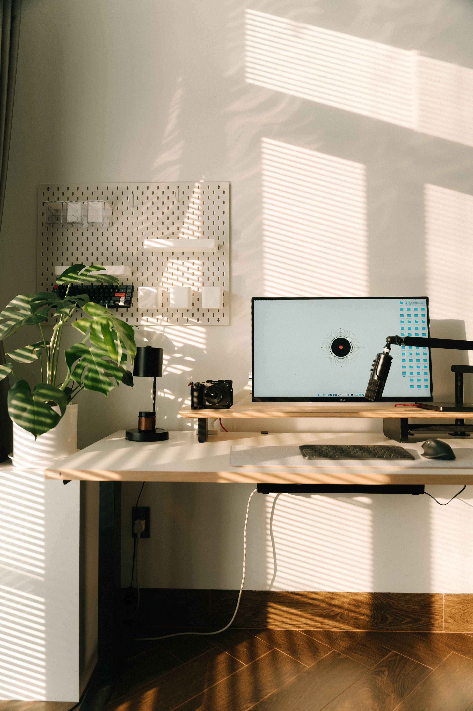

En este artículo
- Introducción
- Analizar el espacio y las necesidades de la entrada
- Crear almacenamiento para los objetos cotidianos
- Mejorar la comodidad de las rutinas de entrada y salida
- Resolver la iluminación de un recibidor oscuro
- Decorar con intención y sin saturar la entrada
- Mantener el recibidor ordenado con una rutina sencilla
- Errores que hacen que el recibidor pierda funcionalidad
- Cómo adaptar el proyecto a la vida diaria
- Comprobar que el recibidor funciona antes de darlo por terminado
- Preguntas frecuentes
- Conclusión
Introducción
Guía para crear un recibidor funcional: distribución, almacenamiento, iluminación, muebles, orden y decoración para aprovechar la entrada de casa. La diferencia entre una idea atractiva y un espacio que funciona durante años suele estar en la planificación. Antes de comprar, instalar o mover elementos, conviene observar las condiciones reales, medir y pensar en las rutinas de quienes utilizan la vivienda.
Esta guía desarrolla el proceso paso a paso con criterios prácticos. El objetivo no es copiar una fotografía, sino tomar decisiones adaptadas al tamaño disponible, la luz, el mantenimiento y el presupuesto. Así es posible obtener un resultado agradable sin introducir soluciones que después resulten difíciles de mantener.
Analizar el espacio y las necesidades de la entrada
El recibidor es una zona de transición y su diseño debe facilitar las acciones que se repiten al entrar y salir. Antes de comprar un mueble, observa qué objetos terminan acumulándose allí: llaves, bolsos, zapatos, correspondencia, paraguas o abrigos. Esa lista revela qué soluciones de almacenamiento hacen falta. Un recibidor funcional no necesita ser grande; necesita responder a hábitos concretos.
Mide el ancho de paso y la profundidad disponible. En entradas estrechas, una consola demasiado profunda puede resultar molesta aunque encaje físicamente. Marcar en el suelo con cinta el volumen de un mueble ayuda a comprobar si las puertas abren bien y si dos personas pueden pasar con comodidad. La circulación debe tener prioridad sobre la decoración.
También conviene observar qué se ve desde la puerta principal. Un recibidor despejado produce una primera impresión más tranquila y evita que la entrada parezca un espacio de almacenamiento improvisado. Si la vivienda no tiene un recibidor definido, una alfombra, un espejo o un mueble estrecho pueden delimitar visualmente la zona sin levantar paredes.
Crear almacenamiento para los objetos cotidianos
El almacenamiento más útil es el que se encuentra cerca del lugar donde se utiliza. Un pequeño recipiente para llaves evita que terminen repartidas por la casa; unos ganchos permiten colgar bolsos o prendas ligeras; y un zapatero cerrado puede reducir el desorden visual. No hace falta incorporar todas las soluciones posibles, sino las que correspondan a la rutina del hogar.
Cuando falta superficie, las paredes son una oportunidad. Percheros, estantes poco profundos y organizadores verticales aprovechan la altura sin ocupar demasiado suelo. Sin embargo, conviene limitar la cantidad de objetos a la vista. Una pared llena de ganchos puede terminar transmitiendo desorden si todo permanece expuesto permanentemente.
Los muebles con doble función son especialmente prácticos. Un banco puede servir para sentarse al calzarse y, al mismo tiempo, guardar zapatos o accesorios. Una consola con cajones mantiene pequeños objetos fuera de la vista. Antes de elegir, comprueba que puertas y cajones puedan abrirse completamente sin bloquear el paso.

Mejorar la comodidad de las rutinas de entrada y salida
Un asiento no es imprescindible en todos los recibidores, pero puede mejorar mucho la comodidad cuando existe espacio. Facilita ponerse y quitarse el calzado y resulta útil para niños o personas con movilidad limitada. En entradas pequeñas, un banco estrecho o un asiento plegable puede cumplir esa función sin ocupar demasiado.
Un espejo permite revisar el aspecto antes de salir y también refleja luz, algo útil en entradas oscuras. Debe colocarse a una altura cómoda y en una posición que no interfiera con puertas. Si el recibidor recibe poca luz natural, una iluminación uniforme evita sombras y hace más fácil localizar objetos pequeños.
La limpieza también forma parte de la funcionalidad. Una alfombra de entrada adecuada ayuda a retener parte de la suciedad, pero debe poder limpiarse con facilidad y no deslizarse. Los materiales de muebles y paredes cercanas a la puerta deberían soportar el uso frecuente. Diseñar pensando en mantenimiento evita que el recibidor se deteriore rápidamente.
Resolver la iluminación de un recibidor oscuro
Muchas entradas dependen casi por completo de luz artificial. En ese caso, una luminaria de techo puede proporcionar iluminación general y una lámpara auxiliar aportar calidez. La temperatura y la intensidad deben permitir ver con claridad sin crear un ambiente frío. Si hay un espejo, colocar la luz de forma que no produzca reflejos molestos mejora su uso.
En recibidores muy pequeños, las lámparas de pared o techo liberan la superficie de la consola. Los sensores de movimiento pueden ser prácticos cuando se entra con bolsas o con las manos ocupadas. Como en cualquier instalación, las soluciones eléctricas deben respetar las condiciones de seguridad de la vivienda.
Los colores claros y las superficies que reflejan parte de la luz pueden ayudar a que una entrada sin ventanas parezca menos cerrada. Esto no obliga a utilizar únicamente blanco: tonos suaves, madera clara y algunos contrastes pueden mantener personalidad sin reducir visualmente el espacio.
Decorar con intención y sin saturar la entrada
La decoración del recibidor debe dejar superficie libre para el uso diario. Un cuadro, un espejo, una bandeja y una planta pueden ser suficientes. Cuando cada centímetro está ocupado por objetos decorativos, apoyar temporalmente unas llaves o una bolsa se vuelve difícil. El equilibrio entre vacío y objetos es parte de la funcionalidad.

Puedes utilizar el recibidor para anticipar el estilo del resto de la vivienda mediante materiales, colores o una pieza con carácter. No es necesario comprar un conjunto completo. Repetir un tono presente en otras habitaciones o utilizar la misma madera puede crear continuidad de forma sencilla.
Si quieres incorporar una planta, elige según la luz disponible y evita colocarla donde reciba golpes al abrir la puerta. En entradas sin luz natural suficiente, es mejor prescindir de una planta viva que mantener una especie en condiciones inadecuadas. La decoración debe adaptarse al espacio, no al revés.
Mantener el recibidor ordenado con una rutina sencilla
Incluso un recibidor bien diseñado puede desordenarse si se convierte en el lugar donde se deja todo al llegar. Establecer un límite para zapatos, bolsos o correspondencia evita acumulaciones. Los objetos que no se utilizan a diario deberían trasladarse a un armario u otra zona de almacenamiento.
Una revisión rápida al final del día puede ser suficiente: devolver llaves a su sitio, retirar papeles y guardar prendas. Cuando cada objeto tiene un lugar definido, ordenar requiere pocos minutos. Si algo permanece siempre fuera, quizá la solución de almacenamiento no sea cómoda y convenga modificarla.
También es útil revisar el recibidor con los cambios de estación. Paraguas, abrigos, accesorios de verano y calzado no necesitan ocupar la entrada durante todo el año. Rotar estos elementos libera espacio y mantiene la zona preparada para las necesidades actuales.
Errores que hacen que el recibidor pierda funcionalidad
Un error habitual es comprar un mueble grande antes de medir el paso. Otro es crear demasiadas superficies donde terminan acumulándose objetos. Cuando el recibidor se convierte en un punto de descarga permanente, la sensación de desorden aparece rápidamente. Cada superficie debería tener una función concreta y una capacidad limitada.
También puede resultar poco práctico colocar percheros o estantes a alturas incómodas. Los objetos de uso diario deben ser fáciles de guardar para todos los miembros del hogar. Si guardar algo exige abrir varias puertas o mover otros objetos, probablemente terminará quedándose fuera. La comodidad del sistema es clave para mantener el orden.

Por último, conviene evitar una decoración que dificulte la limpieza o el movimiento. El recibidor recibe suciedad del exterior y mucho tránsito. Elegir soluciones resistentes, accesibles y fáciles de mantener permite conservar una buena primera impresión sin dedicar demasiado tiempo.
Cómo adaptar el proyecto a la vida diaria
Una forma práctica de comprobar si el diseño funciona es observar qué ocurre durante una semana normal. Si las llaves siguen apareciendo sobre cualquier superficie o los zapatos quedan siempre fuera del mueble, quizá el almacenamiento está mal situado o es incómodo. En lugar de culpar al hábito, conviene ajustar el sistema para que guardar sea la opción más fácil.
El presupuesto puede concentrarse en una o dos piezas que resuelvan necesidades reales. Un buen zapatero estrecho o un banco resistente puede aportar más que varios accesorios pequeños. Antes de comprar organizadores, revisa lo que ya existe en casa: una bandeja, una cesta o un espejo pueden reutilizarse si encajan en las dimensiones y el estilo.
En hogares con varias personas, asignar espacios concretos puede evitar mezclas. Un gancho por persona, una cesta para accesorios o una zona limitada para calzado simplifican la rutina. El sistema debe ser comprensible a simple vista y suficientemente flexible para adaptarse a cambios de temporada.
Comprobar que el recibidor funciona antes de darlo por terminado
Cuando los muebles estén colocados, prueba el recibidor como si llegaras a casa con las manos ocupadas. ¿Puedes abrir la puerta completamente? ¿Existe un lugar accesible para dejar las llaves? ¿Puedes quitarte el abrigo o el calzado sin bloquear el paso? Estas preguntas revelan si la distribución responde a situaciones reales. Un diseño funcional debería simplificar esos movimientos, no obligar a realizar maniobras adicionales.
Revisa también la capacidad de almacenamiento después de varios días. Si un cajón está lleno desde el primer momento, probablemente se han guardado objetos que deberían estar en otra habitación. El recibidor funciona mejor cuando contiene principalmente lo necesario para entrar y salir. Limitar categorías ayuda a evitar que se convierta en un almacén de objetos sin destino.
Finalmente, comprueba la limpieza visual desde la puerta y desde las habitaciones cercanas. Ocultar cables, retirar embalajes, alinear algunos elementos y dejar una parte de la consola libre puede mejorar mucho el resultado sin comprar nada. El orden visible transmite calma y hace que incluso una entrada pequeña parezca más cuidada.
Preguntas frecuentes
¿Qué muebles necesita realmente un recibidor?
Depende de la rutina. Una consola estrecha, algunos ganchos, un zapatero o un banco pueden ser suficientes. Es mejor elegir por necesidad que intentar incorporar todos los muebles posibles.
¿Cómo organizar un recibidor muy pequeño?
Aprovecha la pared, utiliza muebles poco profundos y limita los objetos que permanecen a la vista. Mantener libre el paso es la prioridad.
¿Cómo dar más luz a una entrada oscura?
Combina una iluminación general adecuada con colores claros y un espejo bien situado. Si es posible, evita muebles voluminosos que hagan el espacio más cerrado.
Conclusión
Cómo crear un recibidor funcional y ordenado es un proyecto que mejora cuando se toman decisiones a partir del uso real del espacio. Medir, observar las condiciones, priorizar la funcionalidad y elegir soluciones que puedan mantenerse con facilidad evita compras innecesarias y permite que el resultado evolucione con la vivienda.
No es necesario transformar todo de una vez. Empezar por los cambios que resuelven necesidades concretas, comprobar cómo funcionan y ajustar después suele ofrecer mejores resultados. La estética cobra más sentido cuando acompaña a la comodidad, al orden y a un mantenimiento razonable.